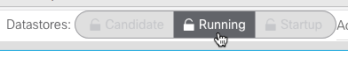
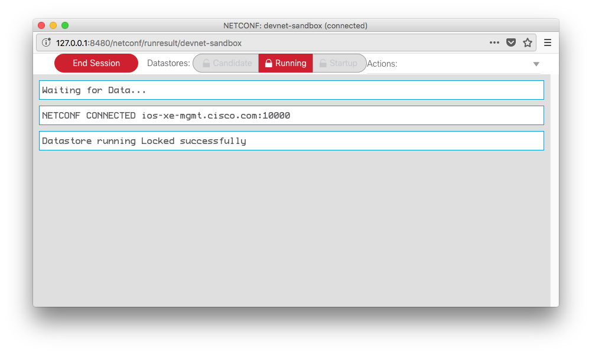
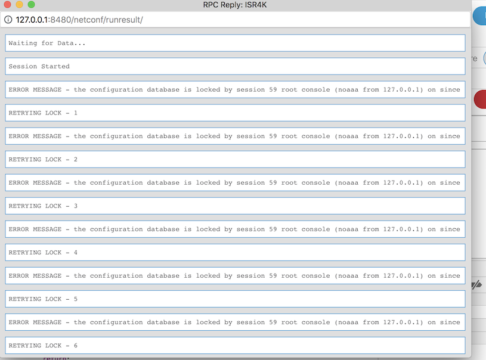
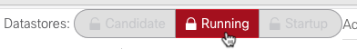
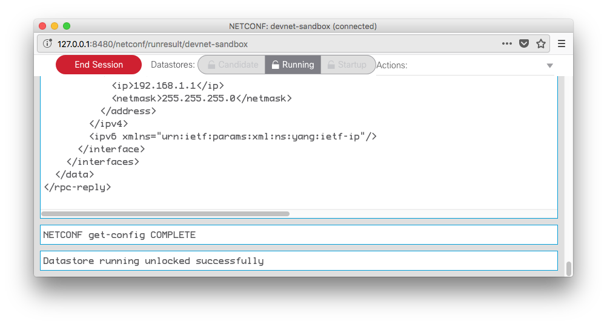

Locking and unlocking datastores¶
While performing edit-config operation, you may wish to lock the datastore temporarily to avoid conflicting changes being introduced from another source. YANG Suite makes it easy to do so while you have a session open to a device.
Locking a datastore(s)¶
Before acquiring the lock, you must have an active NETCONF session with the device. First, choose a device and select “Open device window”. A window will be opened showing that there is not currently a session with this device.

Click “Start Session” and after a moment you will see that a session is now active between YANG Suite and the given device.

Once the session is open, you can acquire a lock on any datastore supported by the selected device, simply by clicking the appropriate button at the top of the window.
You will see a message reporting whether the lock was successful, and if it was, the button will now change appearance to reflect this change.

Repeat steps 3-4 to lock an additional datastore with the same device. Once the required datastore is locked successfully, you can proceed with your get-config and edit-config operations.
If the selected datastore is already locked by some other user when you try to acquire the lock, YANG Suite will retry its attempt to gain the lock on the datastore till the specified retry timer expires or the lock is acquired. Below screenshot shows the lock retry messages being displayed.
Unlocking a datastore(s)¶
Any locks are automatically unlocked when the NETCONF session is ended, either by clicking the “End Session” button or by closing the session window.
If you wish to unlock a datastore while maintaining the session, simply click the locked datastore button to unlock it.
A message will be appended to the window showing whether the unlock operation was successful or not.
